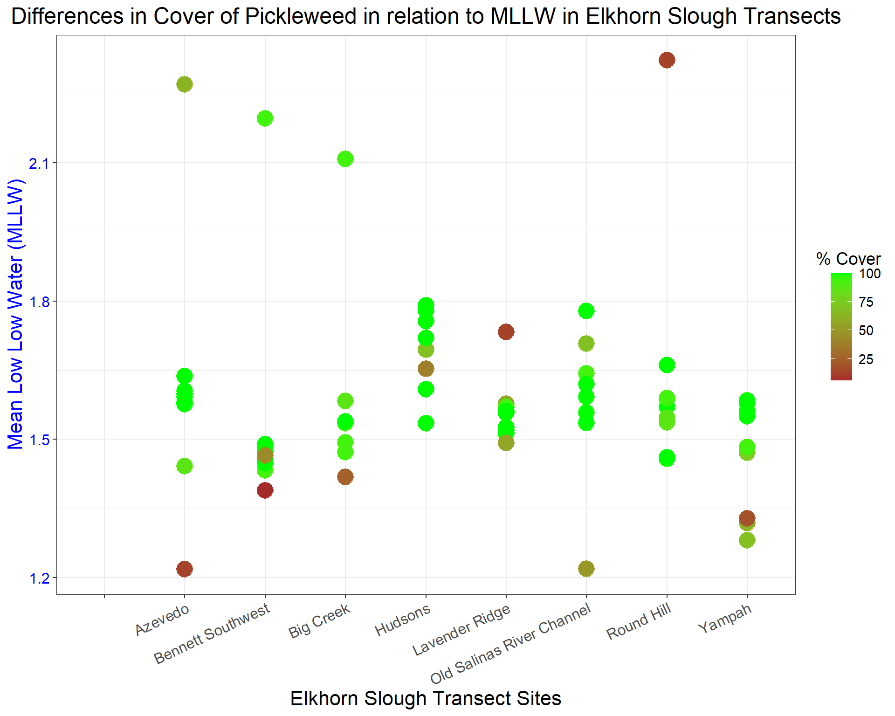

1 + 1[1] 2Quarto enables you to weave together content and executable code into a finished document. To learn more about Quarto see https://quarto.org.
When you click the Render button a document will be generated that includes both content and the output of embedded code. You can embed code like this:
1 + 1[1] 2You can add options to executable code like this
[1] 4The echo: false option disables the printing of code (only output is displayed).
library(ggplot2)Warning: package 'ggplot2' was built under R version 4.4.1library(tidyverse)Warning: package 'tidyverse' was built under R version 4.4.1Warning: package 'tibble' was built under R version 4.4.1Warning: package 'tidyr' was built under R version 4.4.1Warning: package 'readr' was built under R version 4.4.1Warning: package 'purrr' was built under R version 4.4.1Warning: package 'dplyr' was built under R version 4.4.1Warning: package 'stringr' was built under R version 4.4.1Warning: package 'forcats' was built under R version 4.4.1Warning: package 'lubridate' was built under R version 4.4.1── Attaching core tidyverse packages ──────────────────────── tidyverse 2.0.0 ──
✔ dplyr 1.1.4 ✔ readr 2.1.5
✔ forcats 1.0.0 ✔ stringr 1.5.1
✔ lubridate 1.9.3 ✔ tibble 3.2.1
✔ purrr 1.0.2 ✔ tidyr 1.3.1
── Conflicts ────────────────────────────────────────── tidyverse_conflicts() ──
✖ dplyr::filter() masks stats::filter()
✖ dplyr::lag() masks stats::lag()
ℹ Use the conflicted package (<http://conflicted.r-lib.org/>) to force all conflicts to become errorslibrary(dplyr)
df <-read.csv("https://raw.githubusercontent.com/Smillersfsu/Biol708/refs/heads/main/Code/ELKVEG2016.csv")#| label: Figure 1
#| fig-cap: "Cover of Pickleweed across Quadrat Measurements throughout transects of Elkhorn Slough, in relation to MLLW of each measurement. Data indicates that the highest rates of cover near 100% have a cut-off at position of 1.8 around MLLW"
library(ggplot2)
library(dplyr)
ggplot(data =df) +
geom_point(aes(x= SiteID, y = MLLW, color = Cover), size =6) +
labs(x = "Elkhorn Slough Transect Sites",
y = "Mean Low Low Water (MLLW)",
title = "Differences in Cover of Pickleweed in relation to MLLW in Elkhorn Slough Transects", color= "% Cover") +
theme_bw() + scale_color_gradient(low ="brown", high = "green") +
theme(axis.text.x = element_text(angle = 25, hjust = 1, size = 12)) +
theme(plot.title = element_text(hjust = 0.5, size=18))+
theme(axis.title.x.bottom=element_text(size = 16))+
theme(axis.text.y = element_text(size = 12, color= "blue")) +
theme(axis.title.y.left = element_text(size = 16, color = "blue")) +
theme(legend.title = element_text(hjust = 1, size = 14)) +
theme(legend.text = element_text(size=11)) Warning: Removed 102 rows containing missing values or values outside the scale range
(`geom_point()`).
ggplot(data =df) +
geom_point(aes(x =SiteID , y = MLLW , color= Maximum.Canopy.Height), size= 6) +
labs(x = "Elkhorn Slough Transects",
y = "Mean Low Low Water (MLLW)",
title = "Variance of Maximum Canopy Height Across MLLW Across Elkhorn Slough") +
theme_bw() + scale_color_gradient(low ="brown", high = "green") +
theme(axis.text.x = element_text(angle = 25, hjust = 1, size = 7)) +
theme(axis.title.y.left = element_text(size = 7, color = "blue"))Warning: Removed 102 rows containing missing values or values outside the scale range
(`geom_point()`).
theme(axis.text.y = element_text(hjust = 1, size = 7))List of 1
$ axis.text.y:List of 11
..$ family : NULL
..$ face : NULL
..$ colour : NULL
..$ size : num 7
..$ hjust : num 1
..$ vjust : NULL
..$ angle : NULL
..$ lineheight : NULL
..$ margin : NULL
..$ debug : NULL
..$ inherit.blank: logi FALSE
..- attr(*, "class")= chr [1:2] "element_text" "element"
- attr(*, "class")= chr [1:2] "theme" "gg"
- attr(*, "complete")= logi FALSE
- attr(*, "validate")= logi TRUE